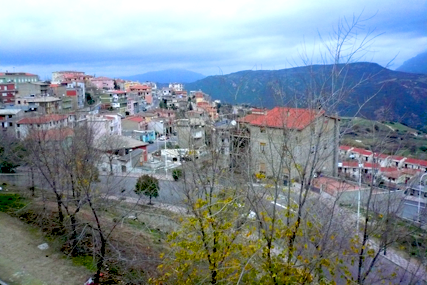
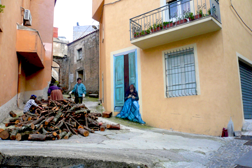
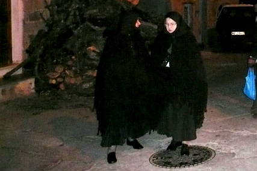

Un aire fresco suaviza el ambiente de un mediodía cualquiera de verano. Durante su camino, los rayos del Sol no han encontrado ningún impedimento hasta reflejarse en la transparente superficie de un mar completamente dormido. Las aguas están limpias y toman tonalidades turquesas. No hay que fijarse demasiado para darse cuenta de que un gran número de yates descansan sobre estas plácidas aguas. Si nos acercamos un poco más, veremos quién es que descansa en la cubierta de estas embarcaciones. En uno de ellos está Silvio Berlusconi, preparando una de sus orgías de dinero. En otro encontramos a Flavio Briatore y, en el de más allá, vemos a Alejandro Agag hablando por el móvil. Estamos en el lujoso y exclusivo complejo turístico Costa Esmeralda, en el noreste de Cerdeña.
Si tomamos el coche y nos dirigimos a poco más de 125 kilómetros hacia el sur, la postal cambia de forma drástica. Nos encontramos en el corazón de la Barbagia, la región más montañosa de la isla italiana. Para dotar a esta nueva postal de calidad artística, lo mejor es que nos paremos en un pueblo de nombre Orgosolo. Los más de 160 murales que se pueden contemplar en las paredes exteriores de las casas hacen de la visita a este pueblo de cerca de 5.000 habitantes una experiencia inolvidable. Si hablamos con sus habitantes, es muy posible que no quieran saber nada de la privativa Costa Esmeralda y que sus ideales no coincidan demasiado con los de aquellos que descansaban en los yates. Al menos, esta es la opinión que ha quedado impregnada en la pintura de la mayoría de los murales, de temática claramente reivindicativa.

Desde la distancia, Orgosolo parece un pueblo como cualquier otro. Pero las paredes de sus casas guardan un secreto…
A Orgosolo se llega por una carretera llena de curvas. Es una buena manera de ir preparando la mente para una sobredosis de arte y conciencia mezclados. Nuestro estado final de mareo nos permitirá acercarnos más al subconsciente, siempre más receptivo que su hermano mayor tan razonable. Si se suele decir que las paredes escuchan, lo que aquí hacen es hablar. Y no hablan por hablar, sino que denuncian las injusticias de Orgosolo, de Cerdeña, de Italia y del mundo. Gritos silenciosos a favor de la libertad y la igualdad; duros abucheos sordos contra el capitalismo y el mal uso del poder por parte de algunos. Súplicas mudas para que las cosas se empiecen a hacer de una manera diferente.

En Orgosolo, los habitantes de carne y hueso y los de las paredes conviven mezclados.
Precisamente, Cerdeña siempre ha sido blanco de las miradas de varios poderes foráneos interesados sólo en sus propios beneficios. Ya lo dice un proverbio sardo: Furat chie benit dae su mare, o lo que es lo mismo: El que viene del mar está aquí para robar. A lo largo de la historia, esta isla del Mediterráneo ha sido disputada o negociada por fenicios, romanos, vándalos, bizantinos, árabes, las antiguas repúblicas de Pisa y Génova, catalanes, castellanos, austrias, los duques de Saboya y, por último, ha sido integrada a Italia. Pero los sardos nunca se han mostrado con la cabeza gacha ante estos abusos sino que siempre han sido un dolor de cabeza difícil de superar por el invasor. En el Alguer, por ejemplo, el reino catalano-aragonés decidió expulsar toda la población hacia el interior para poder respirar tranquilos.
La orografía más accidentada de la isla se presenta en la Barbagia. Esto ha facilitado que ésta haya sido tradicionalmente la región que más ha resistido ante los diferentes imperialismos. No es casualidad que fuera bautizada así por los romanos, utilizando la misma raíz que la palabra bárbaro, que entonces se aplicaba a todo aquel que no se sometía a su imperio. La accidentalidad del territorio también ha facilitado el aislamiento de su gente y, por tanto, ha mantenido de forma más intacta su forma de ser. Hasta hace poco, los códigos de honor de los diferentes clanes familiares seguían muy presentes como forma de justicia. Todavía hoy no es de extrañar el ver pasear por las calles de los pueblos a mujeres mayores vestidas de negro de arriba abajo, con lo que es su traje tradicional. La vida no es fácil en la Barbagia, donde el pastoreo es la principal actividad. Además, durante buena parte del siglo XX los bandoleros paseaban tranquilamente por este territorio lleno de escondrijos naturales.

Dos mujeres orgolesinas con su vestido tradicional.